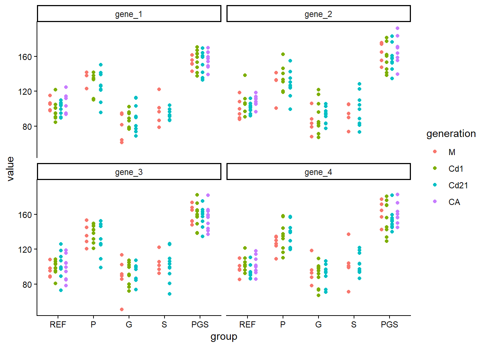
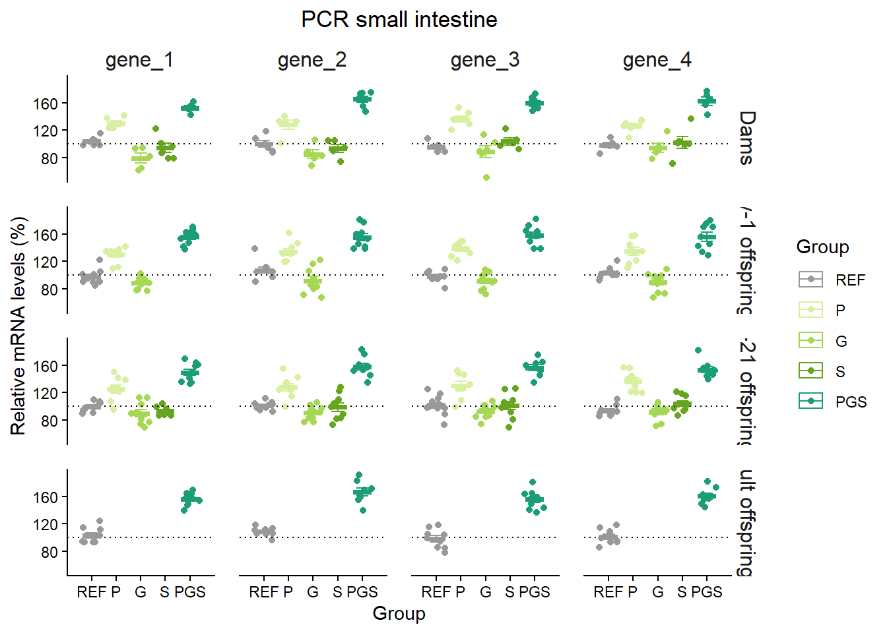
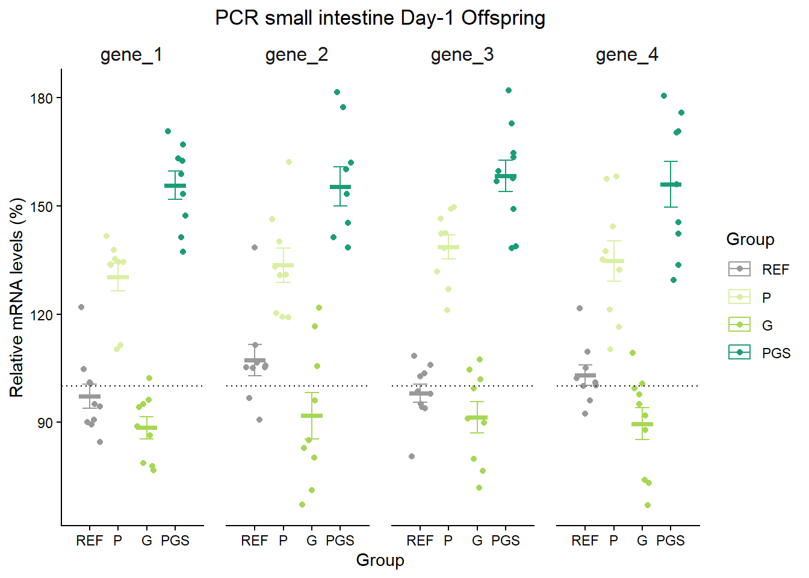
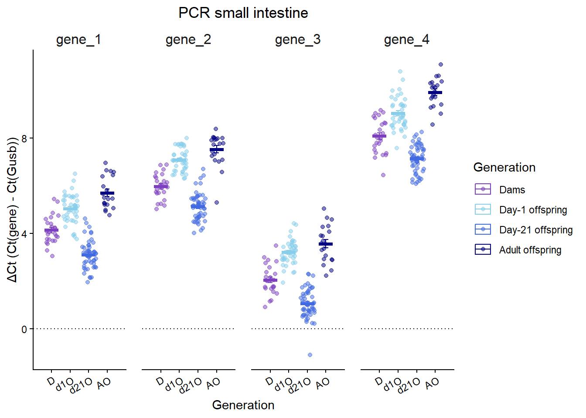
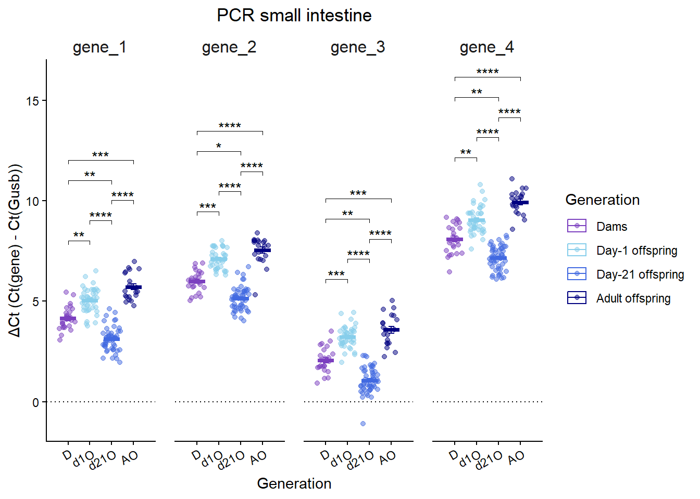

library(tidyverse)
library(here)
library(readxl)
library(janitor)
library(skimr)
library(broom)
library(rstatix)
theme_set(theme_classic()) #tema per defecte clàssic
raw_data <- read_excel(here("Basic", "data", "PCR.xlsx"), sheet = "relative")
data <- raw_data %>%
mutate(across(c(group, sex, rat, generation), as.factor))
longdata <- data %>%
pivot_longer(cols="gene_1":"gene_4", names_to="gene", values_to = "value" ) %>%
mutate(
group = factor(group,
levels = c("REF", "P", "G", "S", "PGS")),
generation = factor(generation,
levels = c( "M", "Cd1", "Cd21", "CA")),
gene = factor(gene,
levels = c("gene_1", "gene_2", "gene_3", "gene_4")))Gràfic de punts (PCR)
Gràfic de punts
A l’estil que jo faria servir per ensenyar unes dades de PCR. Farem un núvol de punts amb línia a la mitjana i barres d’error.
Carreguem paquets, dades i les transformem
Seguidament podem fer un gràfic previ per veure com es comporten els gens en general, sense separar per generació.
longdata %>%
na.omit() %>%
group_by(generation) %>%
ggplot(aes(x=group, y=value, colour=generation))+
geom_jitter(position = position_dodge(width = 0.6))+
scale_x_discrete(limits = c("REF", "P", "G", "S","PGS"))+
facet_wrap(~gene) 
Com podeu veure abans de fer el gràfic hem preparat les dades en la mateixa pipeline, ometent els NA i agrupant per generacions. Seguidament li hem demanat al gràfic:
ggplot(aes(x=group, y=value, colour=generation))+quin és l’eix de les x, quin és l’eix de les y i que determina el colorgeom_jitter(position = position_dodge(width = 0.6))+fer un gràfic de punts amb els valors espaiatsscale_x_discrete(limits = c("REF", "P", "G", "S","PGS"))+l’ordre en que apareixen els grups a l’eix de les xfacet_wrap(~gene)indica que ho separi en mini gràfics, un per cada gen. També podriem fer servirfacet_grid(~)per a separar-ho de manera més controlada, ho veurem al següent.
Anem a personalitzar-lo més i afegir les barres d’error i mitjana. Definim el tema i els colors del grup:
#definim els colors que volem per grup
colors <- c("REF" = "#999999", # Grey
"PGS" = "#1b9e77", # Green 1
"S" = "#66a61e", # Green 2
"G" = "#a6d854", # Green 3
"P" = "#d9f0a3") # Green 4Canviem l’ordre en el que apareixeran els gens i el nom del grup de la generació per a que ens surti complet.
#reordenar com sortiran els gens com interessi
gene_order <- c("gene_1", "gene_2", "gene_3", "gene_4")
longdata$gene <- factor(longdata$gene, levels = gene_order)
#com volem que surti el nom de la generació
generation_name <- c(
M = "Dams",
Cd1 = "Day-1 offspring",
Cd21= "Day-21 offspring",
CA = "Adult offspring")I ja podem fer el gràfic
ggplot <- longdata %>% #dataset a graficar en format "long"
na.omit() %>% #no tenir en compte els NA
ggplot(aes(x=group, y=value, colour=group))+
geom_jitter()+ #gràfic punts
scale_x_discrete(limits = c("REF", "P", "G", "S","PGS"),
expand = expansion(add = 1))+ #afegir espai entre grups
facet_grid(generation~gene,
labeller = labeller(gene = gene_order, generation = generation_name))+ #ordre
geom_hline(yintercept = 100, color = "black",linetype = "dotted", linewidth = 0.5)+
stat_summary(fun.data = mean_se, geom = "errorbar", width = 0.5) +
stat_summary(fun = mean, geom = "crossbar", width = 0.75)+
scale_colour_manual(values=colors,
breaks = c("REF", "P", "G", "S", "PGS"))+
labs(title= "PCR small intestine",
x= "Group",
y= "Relative mRNA levels (%)",
colour= "Group")+
theme(plot.title = element_text(hjust = 0.5),
strip.text.x = element_text(size = 12),
strip.text.y = element_text(size = 12, hjust = 0.75),
strip.background = element_blank(),
panel.spacing = unit(0.5, "cm")) #espai entre els mini gràfics
ggplot
stat_summaryés el que et permet afegir la mitjana i les barres d’errorlabs(title= "PCR small intestine", gràfic x= "Group", eix x y= "Relative mRNA levels (%)", colour= "Group")+Et permet canviar el nom dels eixos i títol i nom de la llegenda, en aquest cas ens la fa del color però també la podria fer per colour, fill, shape, linetype, size…
Un altre exemple seria triar només una generació, on només canvia el següent: afegim filter i a facet_grid només separem per gen
longdata %>%
na.omit() %>%
filter(generation=="Cd1") %>% #afegim filtre!!
ggplot(aes(x=group, y=value, colour=group))+
geom_jitter()+
scale_x_discrete(limits = c("REF", "P", "G","PGS"),
expand = expansion(add = 1))+
facet_grid(~gene, #només separem per gen
labeller = labeller(gene = gene_order))+
geom_hline(yintercept = 100, color = "black",linetype = "dotted", size = 0.5)+
stat_summary(fun.data = mean_se, geom = "errorbar", width = 0.5) +
stat_summary(fun = mean, geom = "crossbar", width = 0.75)+
scale_colour_manual(values=colors,
breaks = c("REF", "P", "G", "PGS"))+
labs(title= "PCR small intestine Day-1 Offspring",
x= "Group",
y= "Relative mRNA levels (%)",
colour= "Group")+
theme(plot.title = element_text(hjust = 0.5),
strip.text.x = element_text(size = 12),
strip.background = element_blank(),
panel.spacing = unit(0.5, "cm"))Warning: Using `size` aesthetic for lines was deprecated in ggplot2 3.4.0.
ℹ Please use `linewidth` instead.
I finalment ho guardem, si veiem que surt algo tallat o massa apretat, podem fer la width o height més gran. Aquesta instrucció ens guardarà l’últim plot.
ggsave(here("output","nom fitxer.png"), width = 18, height = 12, dpi = 300) Afegir significància
En el cas de les meves dades no hi havia diferència entre grups així que vaig fer un gràfic amb el ΔCt (Ct(gene) - Ct(Gusb)) pr generacions. Ara ho farem tot amb un nou dataset, en el qual ja hauriem comprovat la normalitat i homogeneïtat (no ho compleix), i tindriem un kruskal-wallis tot significatiu. Per tant només indicaré el post-hoc, el gràfic, i com introduïr la significància.
raw_data <- read_excel(here("Basic", "data", "PCR_ct.xlsx"))
data <- raw_data %>%
mutate(across(c(group, sex, rat, generation), as.factor))
longdata <- data %>%
pivot_longer(cols="gene_1":"gene_4", names_to="gene", values_to = "value" ) %>%
mutate(
group = factor(group,
levels = c("REF", "P", "G", "S", "PGS")),
generation = factor(generation,
levels = c( "M", "Cd1", "Cd21", "CA")),
gene = factor(gene,
levels = c("gene_1", "gene_2", "gene_3", "gene_4"))
)Fem el post-hoc Dunn. Important que el nom de les columnes sigui igual al del dataset del gràfic (per exemple: gene).
posthoc_dunn <- longdata %>%
group_by(gene) %>%
dunn_test(
value ~ generation,
p.adjust.method = "bonferroni")%>%
add_significance("p.adj")
posthoc_dunn# A tibble: 24 × 10
gene .y. group1 group2 n1 n2 statistic p p.adj
<fct> <chr> <chr> <chr> <int> <int> <dbl> <dbl> <dbl>
1 gene_1 value M Cd1 25 40 3.17 1.51e- 3 9.07e- 3
2 gene_1 value M Cd21 25 50 -3.72 2.01e- 4 1.21e- 3
3 gene_1 value M CA 25 20 4.30 1.69e- 5 1.01e- 4
4 gene_1 value Cd1 Cd21 40 50 -8.11 5.25e-16 3.15e-15
5 gene_1 value Cd1 CA 40 20 1.76 7.85e- 2 4.71e- 1
6 gene_1 value Cd21 CA 50 20 8.32 8.77e-17 5.26e-16
7 gene_2 value M Cd1 25 40 3.98 6.87e- 5 4.12e- 4
8 gene_2 value M Cd21 25 50 -3.02 2.53e- 3 1.52e- 2
9 gene_2 value M CA 25 20 4.72 2.31e- 6 1.39e- 5
10 gene_2 value Cd1 Cd21 40 50 -8.27 1.33e-16 7.96e-16
# ℹ 14 more rows
# ℹ 1 more variable: p.adj.signif <chr>Fem el gràfic
generation_name <- c(M="Dams", Cd1= "Day-1 offspring", Cd21="Day-21 offspring", CA="Adult offspring")
ggplot <- longdata %>%
na.omit() %>%
ggplot(aes(x=generation, y=value, colour=generation))+
geom_jitter(alpha = 0.5)+ #alpha mig transparent
scale_x_discrete(limits = c("M", "Cd1", "Cd21", "CA"), #ordre dels eixos
expand = expansion(add = 1),
labels=c("D", "d1O", "d21O", "AO"))+ #com apareixeran
facet_grid(~gene ,
labeller = labeller(gene = gene_order))+
geom_hline(yintercept = 0, color = "black",linetype = "dotted", linewidth = 0.5)+
stat_summary(fun.data = mean_se, geom = "errorbar", width = 0.25) +
stat_summary(fun = mean, geom = "crossbar", width = 0.75)+
scale_colour_manual(values=c("#7B3FBF", "#87CEEB", "#4169E1", "#000080" ),
breaks = c("M", "Cd1", "Cd21", "CA"),
labels= generation_name)+
labs(title= "PCR small intestine",
x= "Generation",
y= "ΔCt (Ct(gene) - Ct(Gusb))",
colour= "Generation")+
theme(plot.title = element_text(hjust = 0.5),
axis.text.x = element_text(angle = 30, hjust = 1),
strip.text.x = element_text(size = 12),
strip.text.y = element_text(size = 12, hjust = 0.75), #intentar arreglar el hjust per posar l'etiqueta al 100
strip.background = element_blank(),
panel.spacing = unit(0.5, "cm")) #espai entre els mini gràfics
ggplot
Preparem els resultats del post-hoc perquè apareguin al gràfic.
gen_levels <- c("M", "Cd1", "Cd21", "CA")
posthoc_graph <- posthoc_dunn %>%
add_xy_position (x= "generation") %>%
filter(p.adj < 0.05) %>%
mutate(
x1 = match(group1, gen_levels),
x2 = match(group2, gen_levels),
bracket_length = abs(x2 - x1)) %>%
group_by(gene) %>%
arrange(bracket_length) %>%
mutate(
y.position = min(y.position, na.rm = TRUE) +
seq(1, by = 1, length.out = n())) %>%
ungroup()add_xy_position (x= "generation")afegiex la posició x i y on ha de sortirfilter(p.adj < 0.05)que només apareguin les significativesmutate( x1 = match(group1, gen_levels), x2 = match(group2, gen_levels), bracket_length = abs(x2 - x1))això ens permet seterminar quins seràn més llargs o més curts per a col·locar-los en ordre ascendent després amb l’arrange(bracket_length)i quedi més macomutate( y.position = min(y.position, na.rm = TRUE) + seq(1, by = 1, length.out = n()))modifiquem de manera manual per a que quedin consecutius al gràfic
Afegin la significació al gràfic que ja haviem creat.
library(ggpubr)
ggplot +
stat_pvalue_manual(
posthoc_graph,
tip.length = 0.01,
bracket.nudge.y = -1, # pujar/baixar tots els brackets
hide.ns = TRUE)